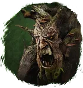
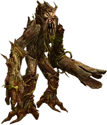
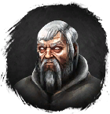

Открыть в интерактивной вики →

| Уровень | 65 |
|---|---|
| Прокачка | есть |
| Ранг в стае | 5 |
| Здоровье | 1700 |
| Мана | 1000 |
| Выносливость | 700 |
| Статистика | Уровень: 65, ранг: 5, здоровье: 1700, мана: 1000, выносливость: 700 |
Цена

Выкуп


Где взять
Покупается у Геремона

ГеремонНавыки


Скины
Доп. информация
Требуемый уровень: 65
Призыв: Требуется Рецепт Хохграта
Цена выкупа: 3 × Средняя Фляга Здоровья, 3 × Средняя Фляга Выносливости, 3 × Средняя Фляга Маны у Беленоса в Лесу Колдов.
Может получать опыт — ДА
Описание
 | Хохграт — разумное растение, созданное магией жизни. Сражается неохотно, но умеет поддерживать спутников иначе. Атакует физически, ментально Использует: Мистицизм, Удар, Природная стойкость, Аура чистоты, Источник природы, Лечение. | |